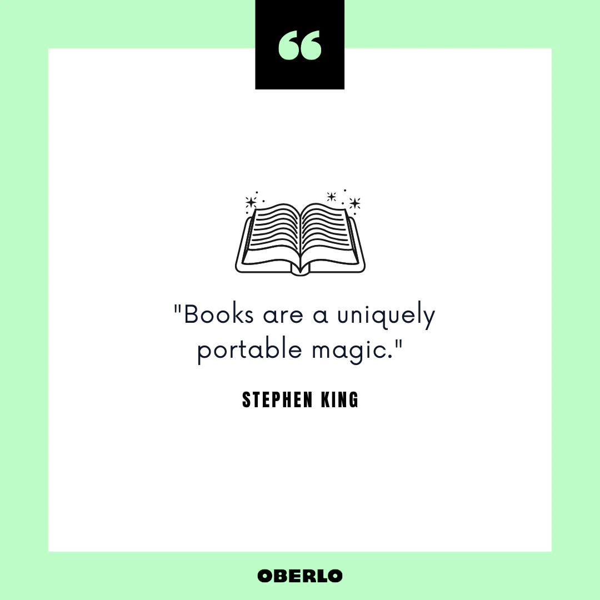
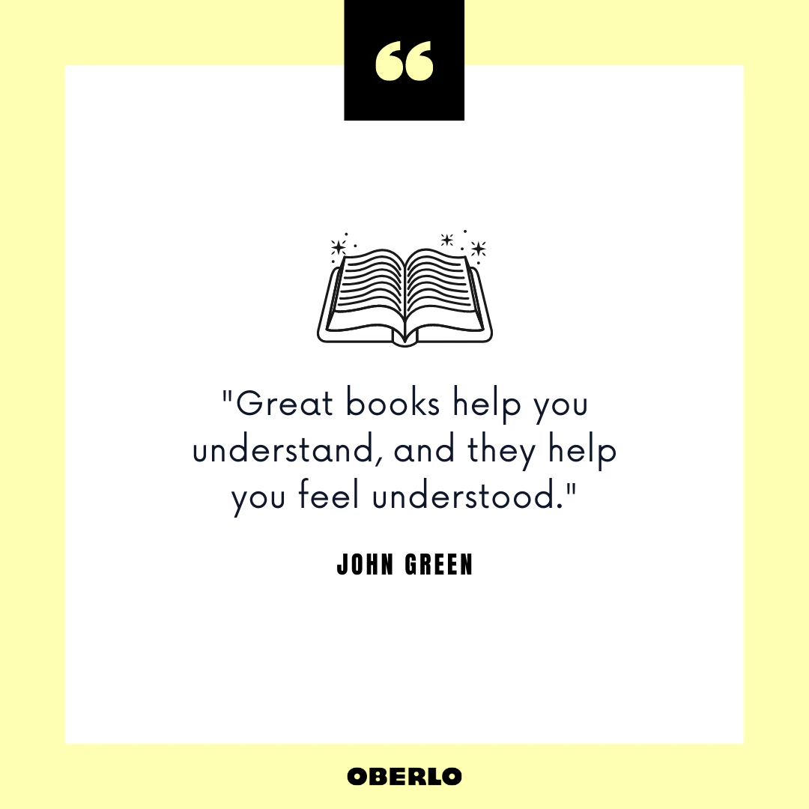
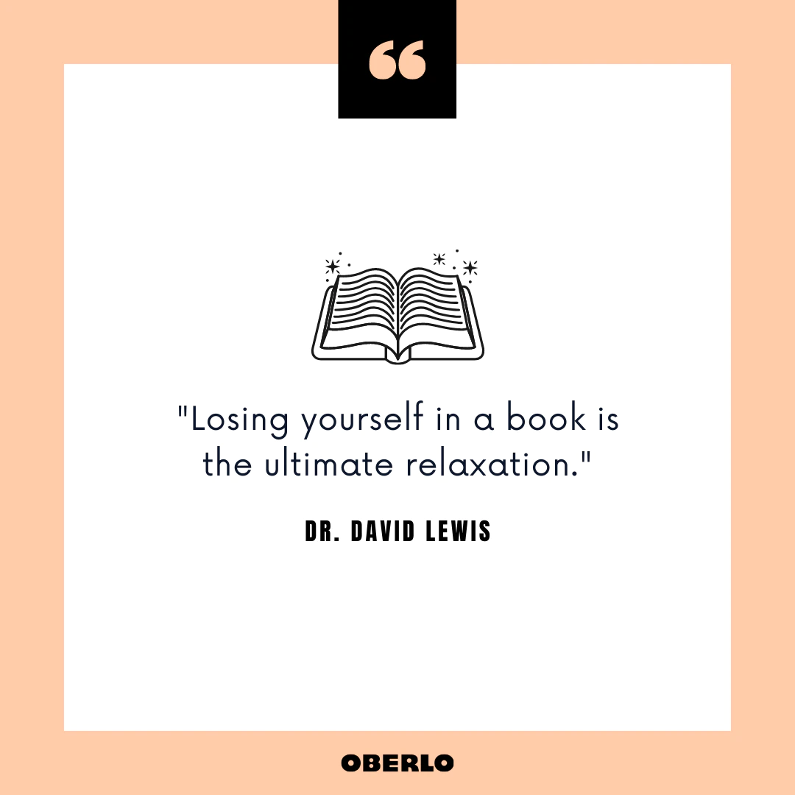
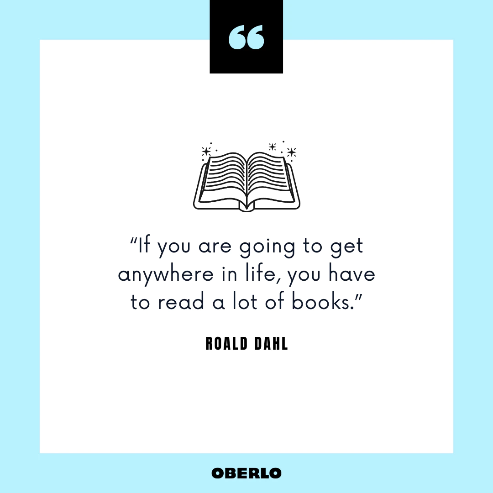

My hobby is reading books. Reading books is very beneficial because it improves our vocabulary,verbal-linguistic skills, it also reduces stress, increases empathy and it also aids sleep. Reading books is a natural hobby of mine howevers this hobby can be doveloped by anyone. Reading books also instills many good qualities especially in children like - punctuality and discipline etc. Reading books is a hobby of many sucessful people like - Bill Gates, Elon Musk etc. Reading books has changed the lives of many people. It is essential to make a person sucessful in life.
Here Are Some Other Benefits Of Reading -
When we read everyday we:
1. Gain valuable Knowledge
2. Exercise Our Brain
3. Improve focus
4. Improve our memory
5. Enjoy Entertainment
6. Improve communication skills
7. Improve mental health
8. Increase our life span
My Favourite Novels
Some of my favourite novels are-
Credits to : @The Horn Book Magazine
Credits to: @Squishie Minnie Bookstore
Credits to: @Kirkus Reviews
Credits to: @Saanvi Modi
Credits to: @Book Series Recaps & Reviews
My Gallery
   